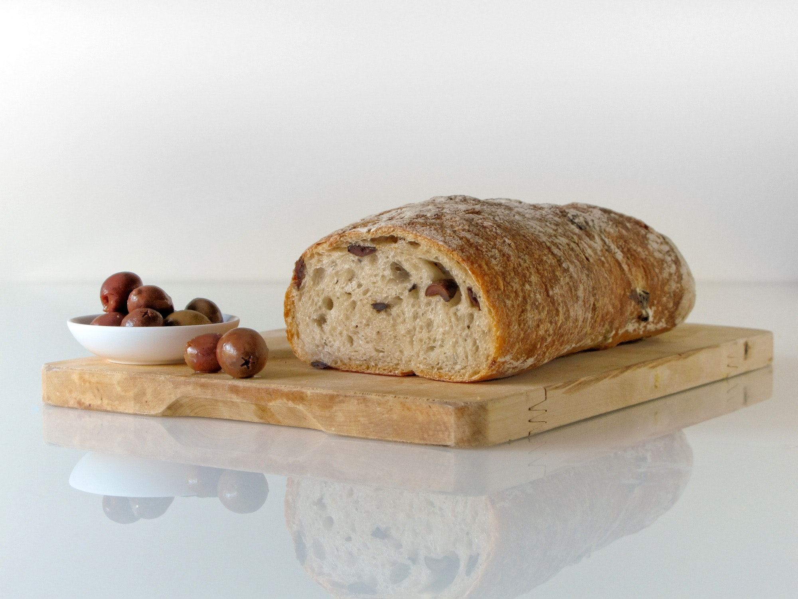
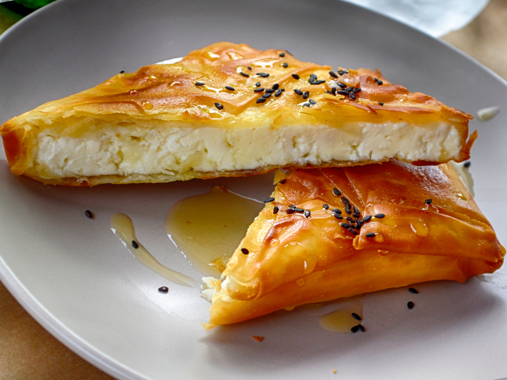

We pride ourselves on not just our amazing rooms and their spectacular views, but also our breakfast menu that will start your day right! Check out our seasonal menu full of fantastic Greek favorites!
This traditional favorite includes light and fluffy scrambled eggs along with large chunks of savory feta! This is a great breakfast to start off a healthy day of hiking or scuba diving!

A Greek classic! Our honey is collected from a local honeycomb and is as sweet as candy! It pairs lovely with a nice bowl of Greek yogurt, topped with chopped walnuts!

A great source of protein with even more flavor! Our housemade Tahini is generously spread over 2 slices of whole wheat bread and topped with honey and a sprinkle of pine nuts. Also a great midday snack with sliced avocado!
A local favorite and a definite must have! This is a savory choice for anyone who wants to mix it up a bit in the morning. Our freshly made bread is baked by a local bakery and is full of feta cheese and olives.
One of the best known Greek foods and a classic favorite! Our savory pies include cheese and spinach pies and are a slice of flaky and savory goodness!
Remember to check back as our menus change seasonally and we are always adding specials!